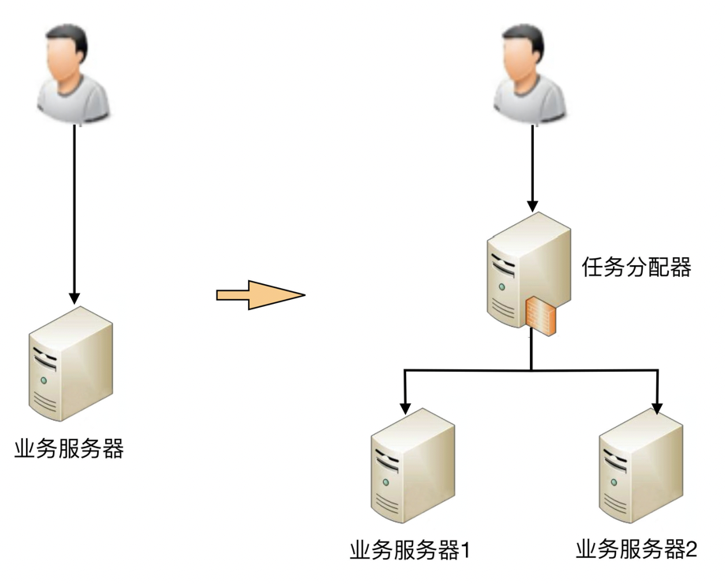
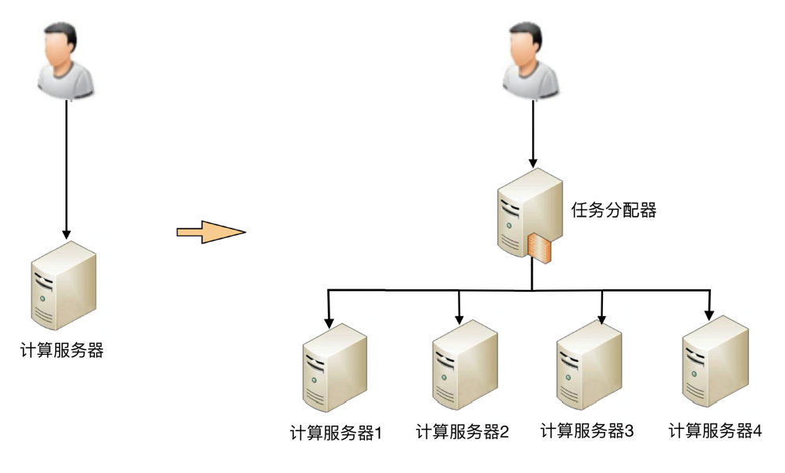
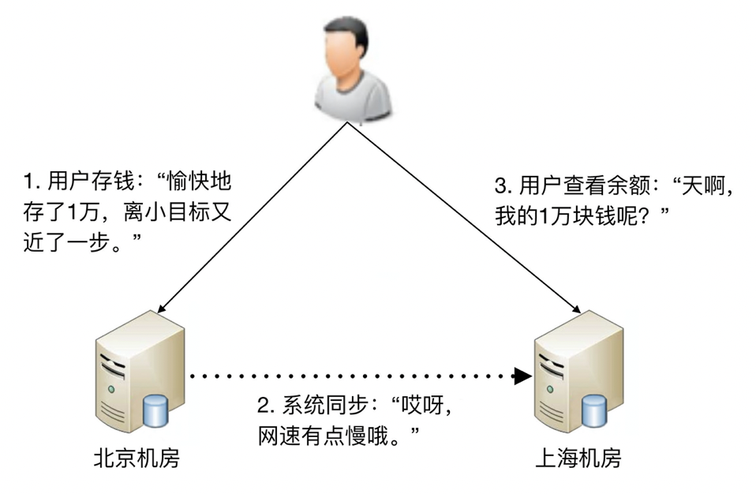
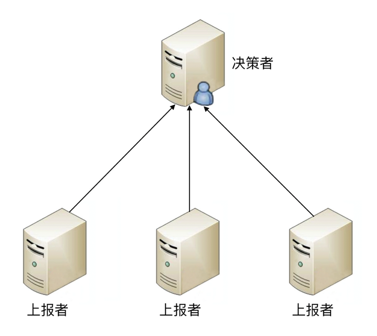
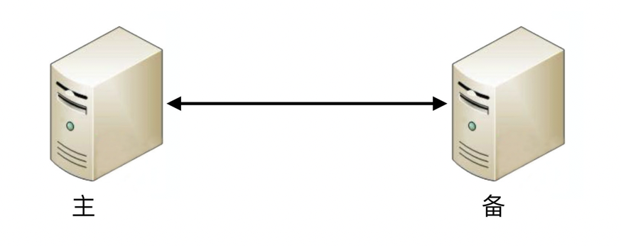
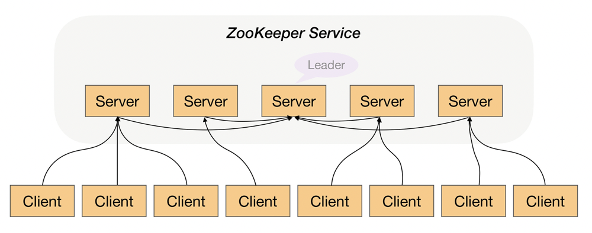

目录
复杂度来源-高可用¶
Note
定义: 系统无中断地执行其功能的能力，代表系统的可用性程度，是进行系统设计时的准则之一。网站高可用的主要技术手段是服务与数据的冗余备份与失效转移。做到高可用很复杂，因为需要考虑的情景很多，而且没有完美的方案，只能做取舍。
难点:
关键在 “无中断” 上面
因为无论是单个硬件还是单个软件，都不可能做到无中断，硬件会出故障，软件会有 bug；
硬件会逐渐老化，软件会越来越复杂和庞大……
除了硬件和软件本质上无法做到 “无中断”，外部环境导致的不可用更加不可避免、不受控制。
例如，断电、水灾、地震，这些事故或者灾难也会导致系统不可用，而且影响程度更加严重，更加难以预测和规避。
Note
系统的高可用方案五花八门，但万变不离其宗，本质上都是通过 “冗余” 来实现高可用。高可用的 “冗余” 解决方案，单纯从形式上来看，和之前讲的高性能是一样的，都是通过增加更多机器来达到目的，但其实本质上是有根本区别的：高性能增加机器目的在于 “扩展” 处理性能；高可用增加机器目的在于 “冗余” 处理单元。
Important
通过冗余增强了可用性，但同时也带来了复杂性
计算高可用¶
计算有一个特点就是无论在哪台机器上进行计算，同样的算法和输入数据，产出的结果都是一样的，所以将计算从一台机器迁移到另外一台机器，对业务并没有什么影响。计算高可用的复杂度不是在这儿体现。

简单的双机架构¶
复杂度表现:
1. 需要增加一个任务分配器，选择合适的任务分配器也是一件复杂的事情
需要综合考虑性能、成本、可维护性、可用性等各方面因素。
2. 任务分配器和真正的业务服务器之间有连接和交互，需要选择合适的连接方式，并且对连接进行管理。
例如，连接建立、连接检测、连接中断后如何处理等。
3. 任务分配器需要增加分配算法。
例如，常见的双机算法有主备、主主，主备方案又可以细分为冷备、温备、热备。

高可用集群架构¶
这个高可用集群相比双机来说，分配算法更加复杂:
可以是 1 主 3 备、2 主 2 备、3 主 1 备、4 主 0 备，
具体应该采用哪种方式，需要结合实际业务需求来分析和判断，并不存在某种算法就一定优于另外的算法。
例如，ZooKeeper 采用的就是 1 主多备，而 Memcached 采用的就是全主 0 备。
存储高可用¶
Important
高可用设计关键点和难点就在于 “存储高可用”
Note
存储与计算相比，有一个本质上的区别：将数据从一台机器搬到到另一台机器，需要经过线路进行传输。线路传输的速度是毫秒级别，同一机房内部能够做到几毫秒；分布在不同地方的机房，传输耗时需要几十甚至上百毫秒。例如，从广州机房到北京机房，稳定情况下 ping 延时大约是 50ms，不稳定情况下可能达到 1s 甚至更多。
对于高可用系统来说，毫秒级的延迟也能造成与计算相比的本质上不同:
这意味着整个系统在某个时间点上，数据肯定是不一致的。
按照 “数据 + 逻辑 = 业务” 这个公式来套的话，数据不一致，即使逻辑一致，最后的业务表现也不一样了。
以最经典的银行储蓄业务为例:
假设用户的数据存在北京机房，用户存入了 1 万块钱，
然后他查询的时候被路由到了上海机房，
北京机房的数据没有同步到上海机房，用户会发现他的余额并没有增加 1 万块。

实例: 跨机房银行储蓄业务¶
上面说的是物理上的传输速度限制，传输线路本身也存在可用性问题:
传输线路可能中断、可能拥塞、可能异常（错包、丢包）
并且传输线路的故障时间一般都特别长，短的十几分钟，长的几个小时都是可能的。
例如:
2015 年支付宝因为光缆被挖断，业务影响超过 4 个小时；
2016 年中美海底光缆中断 3 小时等。
在传输线路中断的情况下，就意味着存储无法进行同步，在这段时间内整个系统的数据是不一致的。
Note
存储高可用的难点不在于如何备份数据，而在于如何减少或者规避数据不一致对业务造成的影响。著名的 CAP 定理，从理论上论证了存储高可用的复杂度。也就是说，存储高可用不可能同时满足 “一致性、可用性、分区容错性”，最多满足其中两个，这就要求我们在做架构设计时结合业务进行取舍。
高可用状态决策¶
Note
无论是计算高可用还是存储高可用，其基础都是 “状态决策”，即系统需要能够判断当前的状态是正常还是异常，如果出现了异常就要采取行动来保证高可用。但在具体实践的过程中，恰好存在一个本质的矛盾：通过冗余来实现的高可用系统，状态决策本质上就不可能做到完全正确。下面是几种常见的决策方式的详细分析。
1. 独裁式¶
Note
独裁式决策指的是存在一个独立的决策主体，我们姑且称它为 “决策者”，负责收集信息然后进行决策；所有冗余的个体，我们姑且称它为 “上报者”，都将状态信息发送给决策者。

独裁式决策¶
独裁式的决策方式优点:
不会出现决策混乱的问题，因为只有一个决策者
缺点:
问题也正是在于只有一个决策者。
当决策者本身故障时，整个系统就无法实现准确的状态决策。
如果决策者本身又做一套状态决策，那就陷入一个递归的死循环了。
2. 协商式¶
Note
协商式决策指的是两个独立的个体通过交流信息，然后根据规则进行决策，最常用的协商式决策就是主备决策。
这个架构的基本协商规则可以设计成:
2 台服务器启动时都是备机。
2 台服务器建立连接。
2 台服务器交换状态信息。
某 1 台服务器做出决策，成为主机；另一台服务器继续保持备机身份。

协商式决策¶
协商式决策的架构不复杂，规则也不复杂，其难点在于:
如果两者的信息交换出现问题（比如主备连接中断），此时状态决策应该怎么做。
1. 如果备机在连接中断的情况下认为主机故障，
那么备机需要升级为主机，
但实际上此时主机并没有故障，那么系统就出现了两个主机，这与设计初衷（1 主 1 备）是不符合的。
2. 如果备机在连接中断的情况下不认为主机故障，
则此时如果主机真的发生故障，那么系统就没有主机了，这同样与设计初衷（1 主 1 备）是不符合的。
3. 如果为了规避连接中断对状态决策带来的影响，可以增加更多的连接。
例如，双连接、三连接。这样虽然能够降低连接中断对状态带来的影响（注意：只能降低，不能彻底解决），
但同时又引入了这几条连接之间信息取舍的问题，即如果不同连接传递的信息不同，应该以哪个连接为准？
实际上这也是一个无解的答案，无论以哪个连接为准，在特定场景下都可能存在问题。
Warning
综合分析，协商式状态决策在某些场景总是存在一些问题的。
3. 民主式¶
Note
民主式决策指的是多个独立的个体通过投票的方式来进行状态决策。例如，ZooKeeper 集群在选举 leader 时就是采用这种方式。

民主式决策¶
民主式决策和协商式决策比较类似:
其基础都是独立的个体之间交换信息，每个个体做出自己的决策，
然后按照 “多数取胜” 的规则来确定最终的状态。
不同点在于民主式决策比协商式决策要复杂得多，如: ZooKeeper 的选举算法 ZAB
Note
除了算法复杂，民主式决策还有一个固有的缺陷：脑裂。这个词来源于医学，指人体左右大脑半球的连接被切断后，左右脑因为无法交换信息，导致各自做出决策，然后身体受到两个大脑分别控制，会做出各种奇怪的动作。例如：当一个脑裂患者更衣时，他有时会一只手将裤子拉起，另一只手却将裤子往下脱。脑裂的根本原因是，原来统一的集群因为连接中断，造成了两个独立分隔的子集群，每个子集群单独进行选举，于是选出了 2 个主机，相当于人体有两个大脑了。为了解决脑裂问题，民主式决策的系统一般都采用 “投票节点数必须超过系统总节点数一半” 规则来处理。
Important
无论采取什么样的方案，状态决策都不可能做到任何场景下都没有问题，但完全不做高可用方案又会产生更大的问题，如何选取适合系统的高可用方案，也是一个复杂的分析、判断和选择的过程。
其他¶
不同的备份类型:
冷备: 系统没启动
温备: 系统启动，但是没法接管业务
热备: 系统启动，随时可以接管业务
高可用与高可靠:
有区别，但实践中一般很难清晰的区分，一般都是混用
严格来说:
高可用是指正常提供服务的概率，主要和故障恢复时间有关；
高可靠是指出问题的概率，主要和故障次数有关。
大部分情况下其实我们都是说可用性，因为保证系统能够正常提供服务才是我们的首要目标
高可用与高性能:
高性能是为了达到一个量化的目标
通常我们会有各种不同的办法去实现，抛开消耗来说，方法有很多种，如:
粗暴加机器，优雅划分等；
高可用是为了规避一个非量化的抽象 bug 场景集合
这些不都是能提前预测到的，所以高可用一般来说都会比高性能复杂！
高可用更复杂一些，绝大部分理论和算法也都是关于高可用的，FLP、CAP、Paxos、Raft、ZAB...
预防只是降低出故障概率，无法根除故障，故障的发生是随机的
2C 高可用是高体验，2B 高可用不一定是体验，可能是安全可靠